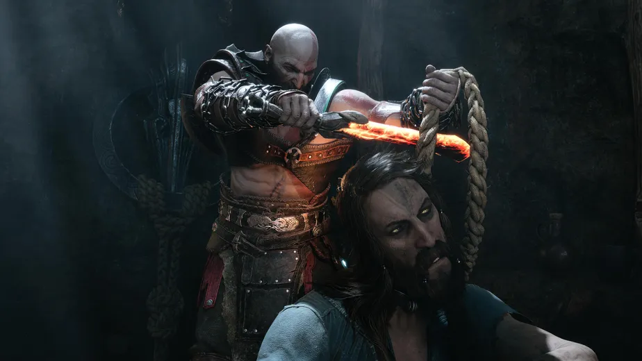
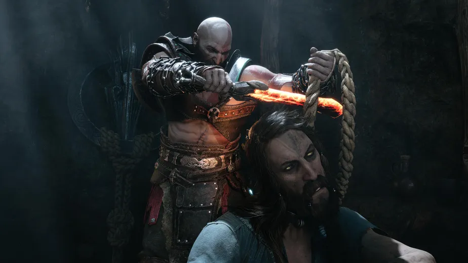

GOD OF WAR RAGNAROK
- Developer: SCE Santa Monica
- Genre(s): Open-World, Action Adventure, General
SOBRE O JOGO
 

HISTÓRIA
Dentro de um gruta, Kratos e Atreus se refugiam do Fimbulwinter. O inverno que antecede o Ragnarök os cerca de inimigos que estão cada vez mais próximos. Para sobreviver a essa grande guerra, pai e filho precisam se decidir: Devem se esconder, mudando de esconderijo em esconderijo? Ou buscar aliados para enfrentar aqueles que os perseguem?
God of War Ragnarök é uma meditação sobre guerra, profecia e os sacrifícios feitos para proteger a família.
A continuação direta de God of War 2018 recria muitos momentos do jogo anterior para reintroduzir um Kratos recluso, em luto e sufocado por um senso de dever e disciplina, assim como seu filho Atreus, agora um jovem guerreiro determinado a encontrar o seu destino.
Após uma visita do deus do trovão Thor, os dois embarcam numa jornada pelos nove reinos para reunir forças e forjar novas alianças com todos que se opõem à tirania de Asgard.
VEJA MAIS